Convolutional neural networks (CNNs) have been the consensus for medical image segmentation tasks. However, they suffer from the limitation in modeling long-range dependencies and spatial correlations due to the nature of convolution operation. Although transformers were first developed to address this issue, they fail to capture low-level features. In contrast, it is demonstrated that both local and global features are crucial for dense prediction, such as segmenting in challenging contexts. In this paper, we propose HiFormer, a novel method that efficiently bridges a CNN and a transformer for medical image segmentation. Specifically, we design two multi-scale feature representations using the seminal Swin Transformer module and a CNN-based encoder. To secure a fine fusion of global and local features obtained from the two aforementioned representations, we propose a Double-Level Fusion (DLF) module in the skip connection of the encoder-decoder structure. Extensive experiments on various medical image segmentation datasets demonstrate the effectiveness of HiFormer over other CNN-based, transformer-based, and hybrid methods in terms of computational complexity, and quantitative and qualitative results. Our code is publicly available at: https://github.com/amirhossein-kz/HiFormer
| Model | CNN | Swin Transformer | DLF | ||||||||
|---|---|---|---|---|---|---|---|---|---|---|---|
| Dimension | |||||||||||
| D | # Layer | # Head | WS | Ps | Pl | S | L | r | # Head | ||
| HiFormer-S | ResNet34 | 96 | [2,2,6] | [3,6,12] | 7 | 384 | 96 | 1 | 1 | 1 | 3 |
| HiFormer-B | ResNet50 | 96 | [2,2,6] | [3,6,12] | 7 | 384 | 96 | 2 | 1 | 2 | 6 |
| HiFormer-L | ResNet34 | 96 | [2,2,6] | [3,6,12] | 7 | 384 | 96 | 4 | 1 | 4 | 6 |
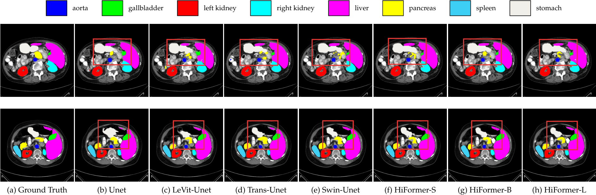
| Methods | DSC ↑ | HD ↓ | Aorta | Gallbladder | Kidney(L) | Kidney(R) | Liver | Pancreas | Spleen | Stomach |
|---|---|---|---|---|---|---|---|---|---|---|
| DARR [24] | 69.77 | - | 74.74 | 53.77 | 72.31 | 73.24 | 94.08 | 54.18 | 89.90 | 45.96 |
| R50 U-Net [13] | 74.68 | 36.87 | 87.74 | 63.66 | 80.60 | 78.19 | 93.74 | 56.90 | 85.87 | 74.16 |
| U-Net [43] | 76.85 | 39.70 | 89.07 | 69.72 | 77.77 | 68.60 | 93.43 | 53.98 | 86.67 | 75.58 |
| R50 Att-UNet [13] | 75.57 | 36.97 | 55.92 | 63.91 | 79.20 | 72.71 | 93.56 | 49.37 | 87.19 | 74.95 |
| Att-UNet [44] | 77.77 | 36.02 | 89.55 | 68.88 | 77.98 | 71.11 | 93.57 | 58.04 | 87.30 | 75.75 |
| R50 ViT [13] | 71.29 | 32.87 | 73.73 | 55.13 | 75.80 | 72.20 | 91.51 | 45.99 | 81.99 | 73.95 |
| TransUnet [13] | 77.48 | 31.69 | 87.23 | 63.13 | 81.87 | 77.02 | 94.08 | 55.86 | 85.08 | 75.62 |
| Swin-Unet [10] | 79.13 | 21.55 | 85.47 | 66.53 | 83.28 | 79.61 | 94.29 | 56.58 | 90.66 | 76.60 |
| LeVit-Unet [55] | 78.53 | 16.84 | 78.53 | 62.23 | 84.61 | 80.25 | 93.11 | 59.07 | 88.86 | 72.76 |
| DeepLabv3+ (CNN) [16] | 77.63 | 39.95 | 88.04 | 66.51 | 82.76 | 74.21 | 91.23 | 58.32 | 87.43 | 73.53 |
| HiFormer-S | 80.29 | 18.85 | 85.63 | 73.29 | 82.39 | 64.84 | 94.22 | 60.84 | 91.03 | 78.07 |
| HiFormer-B | 80.39 | 14.70 | 86.21 | 65.69 | 85.23 | 79.77 | 94.61 | 59.52 | 90.99 | 81.08 |
| HiFormer-L | 80.69 | 19.14 | 87.03 | 68.61 | 84.23 | 78.37 | 94.07 | 60.77 | 90.44 | 82.03 |
| Methods | ISIC 2017 | ISIC 2018 | PH2 | |||||||||
|---|---|---|---|---|---|---|---|---|---|---|---|---|
| DSC | SE | SP | ACC | DSC | SE | SP | ACC | DSC | SE | SP | ACC | |
| U-Net [43] | 0.8159 | 0.8172 | 0.9680 | 0.9164 | 0.8545 | 0.8800 | 0.9697 | 0.9404 | 0.8936 | 0.9125 | 0.9588 | 0.9233 |
| Att-UNet [44] | 0.8082 | 0.7998 | 0.9776 | 0.9145 | 0.8566 | 0.8674 | 0.9863 | 0.9376 | 0.9003 | 0.9205 | 0.9640 | 0.9276 |
| DAGAN [34] | 0.8425 | 0.8363 | 0.9716 | 0.9304 | 0.8807 | 0.9072 | 0.9588 | 0.9324 | 0.9201 | 0.8320 | 0.9640 | 0.9425 |
| TransUNet [13] | 0.8123 | 0.8263 | 0.9577 | 0.9207 | 0.8499 | 0.8578 | 0.9653 | 0.9452 | 0.8840 | 0.9063 | 0.9427 | 0.9200 |
| MCGU-Net [1] | 0.8927 | 0.8502 | 0.9855 | 0.9570 | 0.8950 | 0.8480 | 0.9860 | 0.9550 | 0.9263 | 0.8322 | 0.9714 | 0.9537 |
| MedT [48] | 0.8037 | 0.8064 | 0.9546 | 0.9090 | 0.8389 | 0.8252 | 0.9637 | 0.9358 | 0.9122 | 0.8472 | 0.9657 | 0.9416 |
| FAT-Net [52] | 0.8500 | 0.8392 | 0.9725 | 0.9326 | 0.8903 | 0.9100 | 0.9699 | 0.9578 | 0.9440 | 0.9441 | 0.9741 | 0.9703 |
| TMU-Net [42] | 0.9164 | 0.9128 | 0.9789 | 0.9660 | 0.9059 | 0.9038 | 0.9746 | 0.9603 | 0.9414 | 0.9395 | 0.9756 | 0.9647 |
| Swin-Unet [10] | 0.9183 | 0.9142 | 0.9798 | 0.9701 | 0.8946 | 0.9056 | 0.9798 | 0.9645 | 0.9449 | 0.9410 | 0.9564 | 0.9678 |
| DeepLabv3+ (CNN) [16] | 0.9162 | 0.8733 | 0.9921 | 0.9691 | 0.8820 | 0.8560 | 0.9770 | 0.9510 | 0.9202 | 0.8818 | 0.9832 | 0.9503 |
| HiFormer-S | 0.9238 | 0.9153 | 0.9832 | 0.9695 | 0.9079 | 0.8934 | 0.9801 | 0.9618 | 0.9455 | 0.9737 | 0.9604 | 0.9646 |
| HiFormer-B | 0.9253 | 0.9155 | 0.9840 | 0.9702 | 0.9102 | 0.9119 | 0.9755 | 0.9621 | 0.9460 | 0.9420 | 0.9772 | 0.9661 |
| HiFormer-L | 0.9225 | 0.9046 | 0.9856 | 0.9693 | 0.9053 | 0.8828 | 0.9820 | 0.9611 | 0.9451 | 0.9561 | 0.9691 | 0.9659 |
| Methods | mIOU |
|---|---|
| Frequency recalibration U-Net [3] | 0.9392 |
| XLAB Insights [7] | 0.9360 |
| DSC-IITISM [7] | 0.9356 |
| Multi-scale attention deeplabv3+ [7] | 0.9065 |
| U-Net [43] | 0.7665 |
| Contextual attention [42] | 0.9395 |
| HiFormer-S | 0.9392 |
| HiFormer-B | 0.9406 |
| HiFormer-L | 0.9395 |
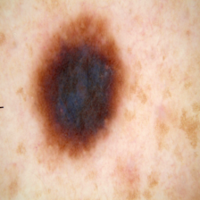
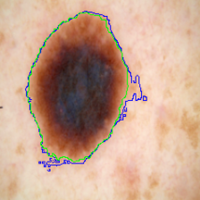
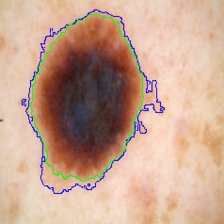
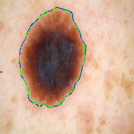
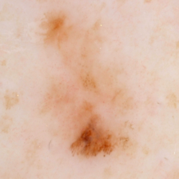
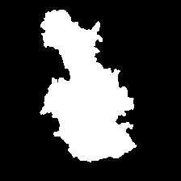
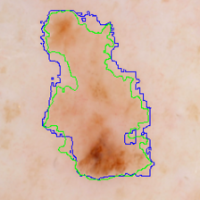
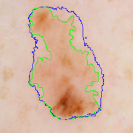
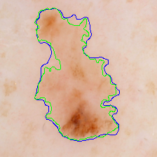
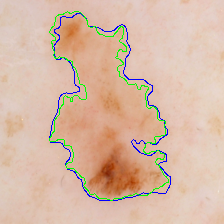
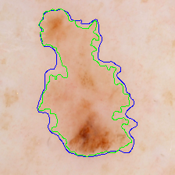
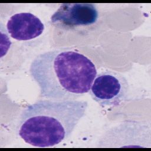
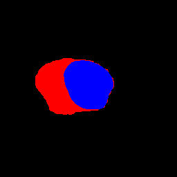
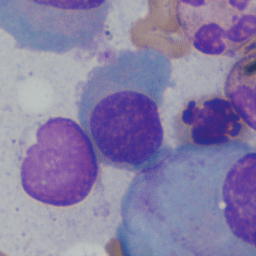
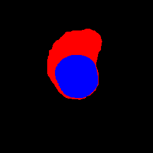
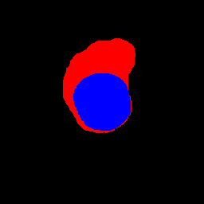
| Model | # Params (M) | DSC ↑ | HD ↓ |
|---|---|---|---|
| TransUnet | 105.28 | 77.48 | 31.69 |
| Swin-Unet | 27.17 | 79.13 | 21.55 |
| LeVit-Unet | 52.17 | 78.53 | 16.84 |
| DeepLabv3+ (CNN) | 59.50 | 77.63 | 39.95 |
| HiFormer-S | 23.25 | 80.29 | 18.85 |
| HiFormer-B | 25.51 | 80.39 | 14.70 |
| HiFormer-L | 29.52 | 80.69 | 19.14 |
| Model | DLF | DSC ↑ | HD ↓ |
|---|---|---|---|
| HiFormer-B | ✗ | 77.15 | 16.88 |
| HiFormer-B | ✓ | 80.39 | 14.70 |
| Model | # Params (M) | DSC ↑ | HD ↓ |
|---|---|---|---|
| HiFormer+ResNet18 | 19.36 | 77.15 | 16.88 |
| HiFormer+ResNet34 | 24.75 | 79.39 | 22.71 |
| HiFormer+ResNet50 | 25.51 | 80.39 | 14.70 |
| HiFormer+ResNet101 | 44.50 | 79.42 | 17.18 |
| HiFormer+DenseNet121 | 23.92 | 78.65 | 16.18 |
| HiFormer+DenseNet169 | 29.55 | 78.73 | 15.94 |
| HiFormer+DenseNet201 | 35.36 | 79.08 | 21.30 |
| Model | Dimension | # Heads | Params | |||||||
|---|---|---|---|---|---|---|---|---|---|---|
| Ps | Pl | S | L | r | Ps | Pl | DSC ↑ | HD ↓ | (M) | |
| HiFormer-B | 384 | 96 | 2 | 1 | 2 | 6 | 6 | 80.39 | 14.70 | 25.51 |
| A | 384 | 96 | 2 | 1 | 2 | 12 | 6 | 79.00 | 15.81 | 25.51 |
| B | 384 | 96 | 2 | 1 | 2 | 3 | 3 | 77.95 | 19.11 | 25.51 |
| C | 384 | 96 | 2 | 1 | 1 | 6 | 6 | 79.35 | 16.52 | 24.90 |
| D | 384 | 96 | 2 | 1 | 3 | 6 | 6 | 79.22 | 17.96 | 26.12 |
| E | 384 | 96 | 1 | 1 | 2 | 6 | 6 | 79.48 | 20.15 | 24.33 |
| F | 384 | 96 | 2 | 2 | 2 | 6 | 6 | 78.86 | 19.75 | 25.59 |
@inproceedings{heidari2023hiformer,
title = {HiFormer: Hierarchical Multi-scale Representations Using Transformers for Medical Image Segmentation},
author = {Heidari, Moein and Kazerouni, Amirhossein and Soltany, Milad and Azad, Reza and Aghdam, Ehsan Khodapanah and Cohen-Adad, Julien and Merhof, Dorit},
booktitle = {Proceedings of the IEEE/CVF Winter Conference on Applications of Computer Vision (WACV)},
pages = {6191--6201},
year = {2023},
doi = {10.1109/WACV56688.2023.00614}
}